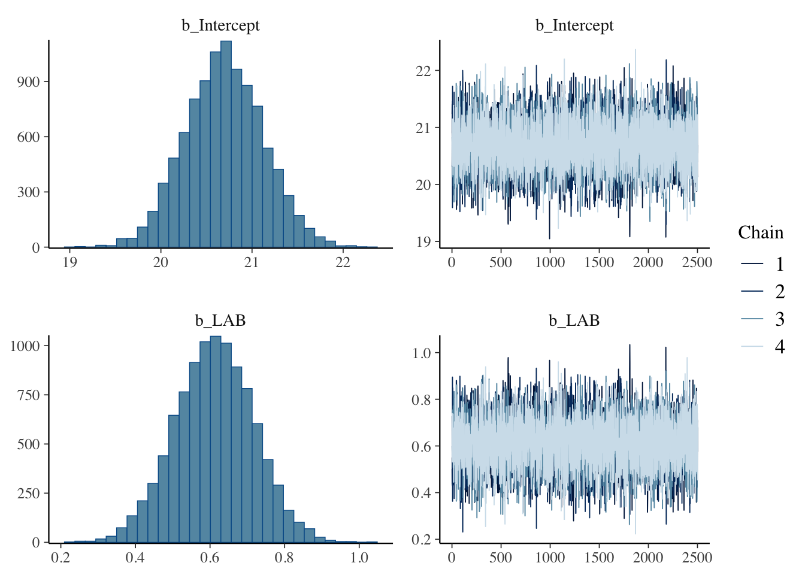
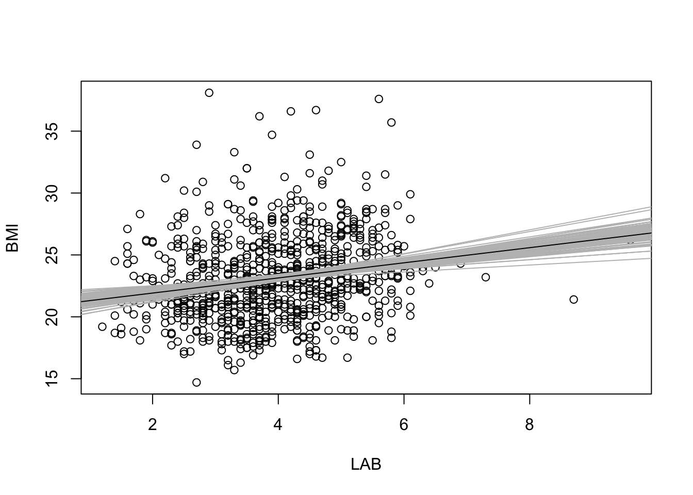
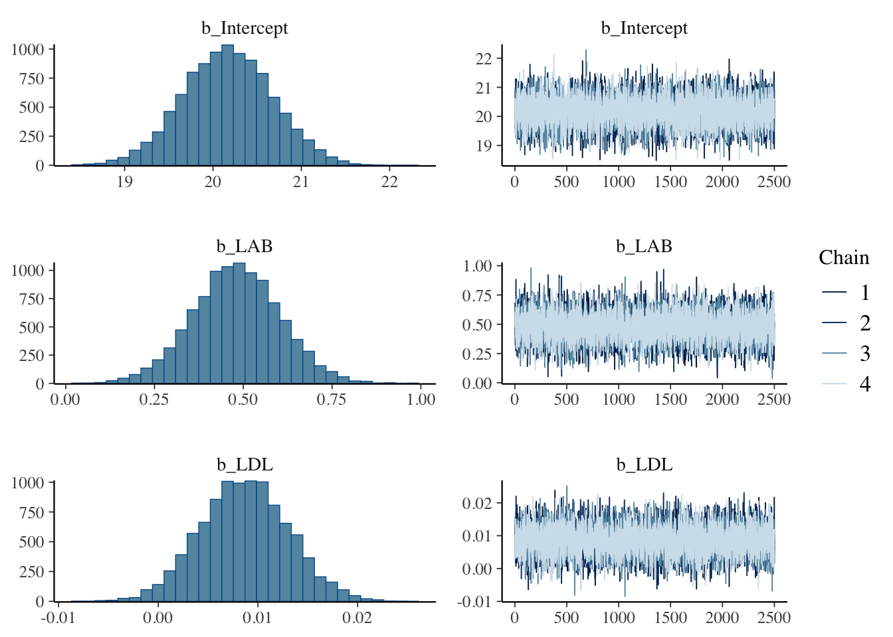
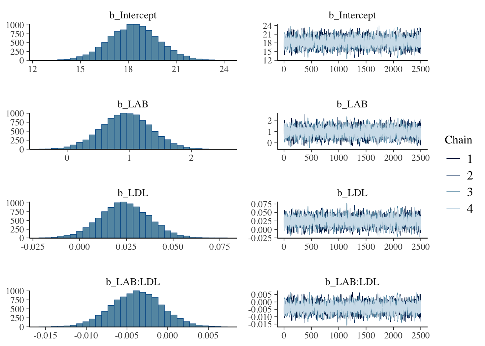

ベイズ分散分析のモデル解析
心理学実験を題材として
2024-09-24
A Blog Entry on Bayesian Computation by an Applied Mathematician
$$
$$
ベイズ回帰分析は多くのデータ解析における「最初の一歩」である．ベイズ回帰分析から始まるベイズのワークフローや，理論的な背景は次稿を参照：
ここではベイズ回帰モデルに変数を増やしていく際の解釈の変化や，変数の選択の問題などの実際的な問題を扱う．
library(readxl)
raw_df <- read_excel(path)はじめに \[ \texttt{BMI} = \beta_0 + \beta_{\texttt{LAB}}\cdot\mathtt{LAB} + \beta_{\texttt{LDL}}\cdot\mathtt{LDL} + \beta_{\texttt{LAB:LDL}}\cdot\mathtt{LAB}\cdot\mathtt{LDL} + \epsilon \] \[ \beta_0\sim\mathrm{t}(3;\mu_0,3.4),\qquad\epsilon\sim\mathrm{N}(0,\sigma^2), \] \[ \beta_{\texttt{LAB}},\beta_{\texttt{LDL}},\beta_{\texttt{LAB:LDL}}\sim\mathrm{N}(0,\infty),\qquad\sigma\sim\mathrm{t}(3;0,3.4), \] というモデルを考える．
library(brms)
model1 <- bf(
BMI ~ LAB
)
fit1 <- brm(
formula = model1,
data = raw_df,
chains = 4, iter = 5000, cores = 4
)library(knitr)
kable(get_prior(
formula = model1,
data = raw_df
))| prior | class | coef | group | resp | dpar | nlpar | lb | ub | source |
|---|---|---|---|---|---|---|---|---|---|
| b | default | ||||||||
| b | LAB | default | |||||||
| student_t(3, 22.7, 3.4) | Intercept | default | |||||||
| student_t(3, 0, 3.4) | sigma | 0 | default |
plot(fit1, variable = c("b_Intercept", "b_LAB"))
summary(fit1)$fixed Estimate Est.Error l-95% CI u-95% CI Rhat Bulk_ESS Tail_ESS
Intercept 20.6961127 0.428332 19.8724047 21.541559 1.0000894 9919.088 7202.522
LAB 0.6119695 0.105872 0.4014823 0.817622 0.9998797 9249.283 7186.599\(\beta_{\texttt{LAB}}\) の最頻値＝最尤推定量は \(0.6\) である．これは，LAB が \(1\) 違う個人の間で BMI の値が約 \(0.6\) 違うと解釈できる．
例えば LAB が \(3.0\) の個人の予測される BMI は \[ \mathtt{BMI}\approx20.7+0.6\times3.0=22.5 \] となる．
ここに新たな変数 LDL を追加すると，LAB の係数 \(\beta_{\texttt{LAB}}\) は \(0.6\) から \(0.5\) に減少する．これはどういう意味だろうか？
model2 <- update(model1, BMI ~ LAB + LDL)
fit2 <- brm(
formula = model2,
data = raw_df,
chains = 4, iter = 5000, cores = 4
)plot(fit2, variable = c("b_Intercept", "b_LAB", "b_LDL"))
一般に係数の追加は層別に当たる．例えばこの結果は，LDL の値が同じ人の中では LAB が \(1\) 違う人の BMI の値が \(0.5\) 違うと解釈できる．
summary(fit2)$fixed Estimate Est.Error l-95% CI u-95% CI Rhat Bulk_ESS
Intercept 20.166740267 0.510522239 1.916021e+01 21.16019758 1.000753 12221.847
LAB 0.481395182 0.124645917 2.389870e-01 0.72592090 1.001291 9120.764
LDL 0.008630676 0.004390414 1.012456e-04 0.01724088 1.000804 9642.207
Tail_ESS
Intercept 7745.032
LAB 6973.939
LDL 7388.183ここで \(\beta_{\texttt{LDL}}\) の値が極めて小さいことに気づくかもしれない．これは LAB に比べて LDL の影響が小さいことを意味しない．なぜならばこの２つの変数はスケールが約 \(10^2\) 違うためである．LDL は 100 のスケール，LAB は 1 のスケールである．
説明変数 LAB と LDL のどちらが重要か，どっちをモデルに含めるべきかは全く別の方法で議論する必要がある．
そこでデータを正規化してみる：
df <- data.frame(
sBMI = scale(raw_df$BMI),
sLAB = scale(raw_df$LAB),
sLDL = scale(raw_df$LDL)
)
model2s <- bf(sBMI ~ sLAB + sLDL)
fit2s <- brm(
formula = model2s,
data = df,
chains = 4, iter = 5000, cores = 4
)plot(fit2s, variable = c("b_Intercept", "b_sLAB", "b_sLDL"))
summary(fit2s)$fixed Estimate Est.Error l-95% CI u-95% CI Rhat Bulk_ESS
Intercept -3.713305e-05 0.03331282 -0.0653705442 0.06528019 1.000142 8200.177
sLAB 1.547948e-01 0.03971459 0.0770044500 0.23356108 1.000533 8176.849
sLDL 7.751500e-02 0.03964411 -0.0009587426 0.15493778 1.000060 8366.416
Tail_ESS
Intercept 7006.161
sLAB 7330.864
sLDL 7904.067データを正規化してしまったため，直接的な係数の解釈はできないが，係数を相互に比較できる．
またその他のモデルの性質は変わらない．例えば事後予測分布も変わらない．
library(gridExtra)
p2s <- pp_check(fit2s, ndraws = 100)
p2 <- pp_check(fit2, ndraws = 100)
grid.arrange(p2, p2s, nrow = 1)
再び正規化する前のデータに戻る．
model3 <- update(model2, BMI ~ LAB * LDL)
fit3 <- brm(
formula = model3,
data = raw_df,
chains = 4, iter = 5000, cores = 4
)plot(fit3, variable = c("b_Intercept", "b_LAB", "b_LDL", "b_LAB:LDL"))
summary(fit3)$fixed Estimate Est.Error l-95% CI u-95% CI Rhat Bulk_ESS
Intercept 18.342847436 1.568855132 15.217697338 21.470326438 1.000462 3627.617
LAB 0.948896994 0.400163493 0.156625759 1.734906281 1.000388 3715.667
LDL 0.024015313 0.013311850 -0.002112022 0.050269396 1.000499 3792.231
LAB:LDL -0.003796444 0.003105054 -0.009906587 0.002312495 1.000913 3608.100
Tail_ESS
Intercept 4617.198
LAB 4842.826
LDL 4301.296
LAB:LDL 4361.301交差項を含む線型回帰における係数の解釈はさらに限定的になる．
\(\beta_{\texttt{LAB}}\) は LDL が \(0\) である人が仮にいたとした場合の，LAB が \(1\) 違う人の間の BMI の平均的な違いを表す，と解釈できる．（LDL の平均が \(0\) になるように変数変換をして回帰するともっと自然な解釈ができる）．
\(\beta_{\texttt{LAB:LDL}}\) は片方の係数 \(\beta_{\texttt{LAB}}\) を固定した際，LDL が \(1\) だけ違うグループにおける係数 \(\beta_{\texttt{LDL}}\) との違いを表す．
すなわち交差項の追加は，LDL に依って層別し，それぞれのグループに異なる \(\beta_{\texttt{LAB}}\) を推定することを可能にする．この点で階層モデリングに似ている．
線型回帰において，説明変数の追加は，「他の説明変数を固定したグループ内での」係数の推定に変化する（階層モデリングにつながる見方）．
(10 節 Gelman et al., 2020) に線型重回帰モデルにおいて，係数の解釈法が丁寧に解説されている．